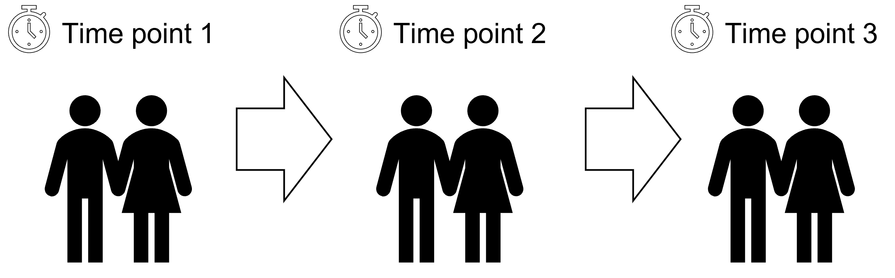
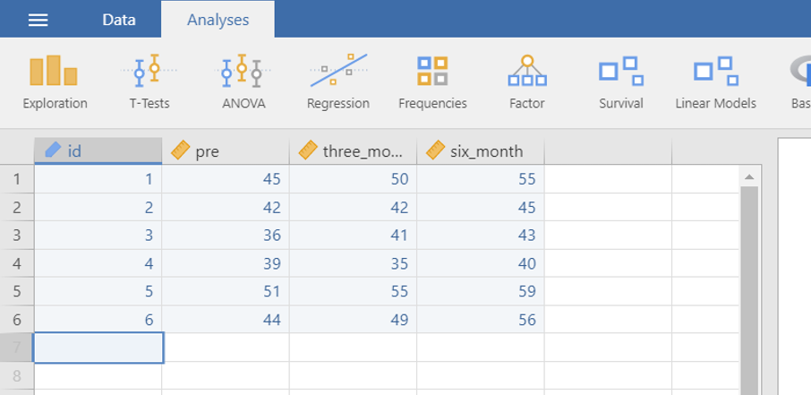
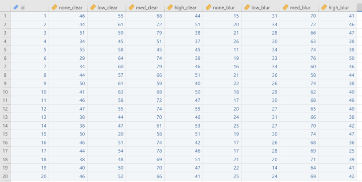
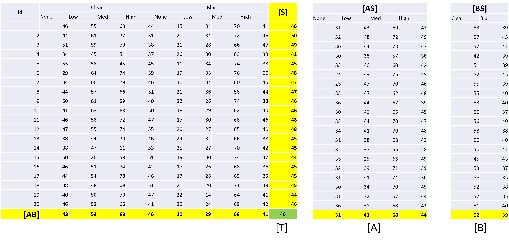
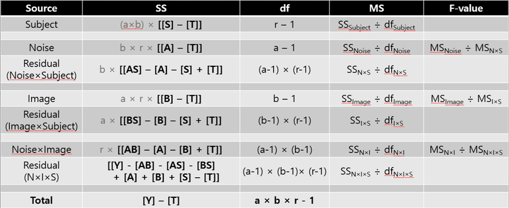
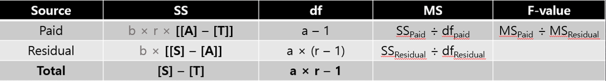
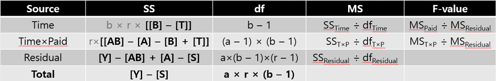

3 RM ANOVA
3.1 Repeated Measure ANOVA란 무엇인가?
3.1.1 반복측정 분산분석
앞서 우리는 일원배치 분산분석, 이원배치 분산분석 그리고 contrasts 분석까지 꽤 다양한 분석방법을 공부했습니다. 이정도 했으면 그만 나올 법도 한데, 뭔가 새로운 게 또 등장합니다. 사실, 우리나라에서는 그다지 많이 배우는 방법은 아닙니다. 문제는 이 방법을 사용한다면 더 좋았을 경우를 워낙 많이 봐서 제가 꽤 안타까워 굳이 한 가지 더 추가하여 강의를 만들었습니다. 반복측정 분산분석이란 동일한 대상에게 반복하여 측정한 후 데이터를 만들 경우에 하는 분산분석 방법입니다. 예를 들어보겠습니다.
- 투약 효과 확인을 위해 남녀 25명씩 총 4회 콜레스테롤 레벨 측정
- 운동 효과 측정을 위해 남녀 3명씩 6명을 총 3회에 걸쳐 운동 레벨 측정 (Figure 3.1)

동일한 사람에게 약을 먹이고 총 4회에 걸쳐 그 효과를 측정하는 것은 결국 약의 시간에 따른 효과를 볼 수 있는 매우 좋은 방법입니다. 비슷하게 운동효과를 측정하기 위해 3회에 걸쳐 그 변화를 보는 것은 사실 상당히 자연스럽고 당연한 것처럼 보입니다. 그렇다면 왜 이 경우에 기존에 우리가 알고 있던 일원배치 혹은 이원배치 분산분석과 같은 방법을 쓰면 안 되는 것일까요? 위의 두 번째 예제(Figure 3.1)를 사용하여 설명해 보겠습니다.
| ID | 운동전 | 3개월 후 | 6개월 후 | 개인별 평균 |
|---|---|---|---|---|
| 1 | 45 | 50 | 55 | 50 |
| 2 | 42 | 42 | 45 | 43 |
| 3 | 36 | 41 | 43 | 40 |
| 4 | 39 | 35 | 40 | 38 |
| 5 | 51 | 55 | 59 | 55 |
| 6 | 44 | 49 | 56 | 49.7 |
| 기간별 평균 | 42.8 | 45.3 | 49.7 | 전체 평균 45.9 |
Table 3.1 을 보면, 운동전 6명의 평균은 42.8, 3개월 후는 45.3, 6개월 후는 49.7입니다. 지속적으로 운동레벨이 증가한 것이 보입니다. 전체 평균은 45.9였습니다. One-way ANOVA를 적용해보면, 이 세 그룹의 평균값의 차이가 우리가 원하는 Between Variance가 됩니다. 정확하게는 시간(Time)에 따른 차이가 될 것입니다. 그리고 Within Variance는 각 세 개의 그룹 내 분산이므로 세로로 계산된 분산이 되어야 합니다. 문제는 이 경우 세 개의 그룹의 Within Variance가 서로 간에 상관관계가 있다는 점입니다. 예를 들면 첫 번째 사람 (ID 1)의 경우 운동전에 45, 3개월 후에 50, 6개월 후에 55가 됩니다. 이 세 개의 값은 각각 다른 세 그룹의 Within Variance를 계산할 때 사용되지만 문제는 한 사람의 운동 레벨 결과라는 점이 문제입니다. 이 첫 번째 사람의 개인 평균은 50이면서 동일한 사람이므로 이 세 값 45, 50, 55는 강력한 상관관계가 있을 수밖에 없습니다. 이러한 상관관계가 모든 6명 각각에 발생하므로 우리가 기존의 방법으로 Within Variance를 계산할 경우 이 값에 개인 별 correlation으로 인해 이 값이 비정상적으로 커지게 됩니다. 가끔 왜 커지냐고 묻는 분들이 계시는데, 이를 설명하려면 수학적인 증명 비슷한 것을 해야 하고 제 능력 밖이기도 해서 여기서는 그냥 그렇다고 일단 이해하고 넘어가주실 것을 부탁드립니다. 정확히 왜 커지는지 알고 싶으시다면 대학원 과정의 Mathematical statistics 를 수강하실 것을 권합니다.
그렇다면, Within Variance가 비정상적으로 커지는 것이 왜 문제일까요? 혹시 다른 방법은 없을까요? 여기서 어떤 분들은 Two-way ANOVA를 떠올리실 수도 있을 것입니다. 맞습니다. 하지만 또 다른 문제가 발생합니다. 여기서 이원배치 분산분석을 사용한다는 것은 개인을 하나의 그룹으로 간주하고 추가적인 변수로 ID를 넣어서 보는 것입니다. 이 경우 위의 데이터는 \(3 \times 6\) 데이터로 바뀌는데 각 셀에 단 하나의 값만 존재합니다. 이렇게 되면 평균과 분산을 구할 수 없으므로 분산분석이 불가합니다. 그렇다면 위의 예제를 일원배치 분산분석으로 분석할 때 문제는 무엇일까요? 바로 F-value가 문제입니다.
\[ \text{F-value} = \frac{\text{Between Variance}}{\text{Within Variance}}\]
이미 앞서 반복적으로 이야기 했듯이 F-value는 Between Variance와 Within Variance의 비율입니다. 만약 Within Variance가 비정상적으로 커졌다면, 이는 F-value의 값이 비정상적으로 작아졌다는 것을 의미합니다. 그러므로 F-value가 비정상적으로 작아졌다면 원래는 유의할 수도 있는 p-value가 유의하지 않게 될 수도 있다는 의미가 됩니다. 그러므로 우리는 이 문제를 해결해야 하고 이를 해결하는 방법이 바로 반복측정 분산분석입니다. 반복측정 분산분석의 시스템적인 개념은 아래의 그림과 같습니다.
Figure 3.2 를 보면 앞에서 배운 일원배치 분산분석은 \(SS_{Total}\)을 \(SS_{Between}\)과 \(SS_{Within}\)으로 나누었다면, 반복측정 분산분석은 조금 다릅니다. 일단 \(SS_{Total}\)을 먼저 \(SS_{Condition}\)으로 나누는데요. 이 \(SS_{Condition}\)은 일원배치 분산분석의 \(SS_{Between}\)과 동일합니다. 다만 여기서는 시간의 변화에 따른 차이이기 때문에 일종의 \(SS_{Time}\)이라고 볼 수 있습니다. 그리고 일원배치 분산분석의 \(SS_{Within}\) 대신 반복측정 분산분석에서는 \(SS_{Within}\)이 Within-groups Variance가 되는데, 이는 다시 둘로 쪼개집니다. 먼저 \(SS_{Subject}\)는 위에서 한 사람을 여러 번 측정해서 나타나는 Variance를 의미합니다. 즉, 이 Variance가 바로 비정상적으로 커진 분산입니다. 그리고 일원배치 분산분석의 \(SS_{Within}\) 역할을 하는 것은 두 번째에 있는 \(SS_{Error}\)입니다. 이것이 반복측정 분산분석에서 비교기준이 되는 분산입니다. 그렇다면 이제 반복측정 분산분석의 F-value에 대해서 알아보겠습니다.
3.2 RM ANOVA의 F-value를 계산해 보자
그러면 이제 앞의 예제를 이용해서 반복측정 분산분석의 F-value를 계산해 보겠습니다. 앞의 데이터를 다시 가져와 보겠습니다.
| ID | 운동전 | 3개월 후 | 6개월 후 | 개인별 평균 |
|---|---|---|---|---|
| 1 | 45 | 50 | 55 | 50 |
| 2 | 42 | 42 | 45 | 43 |
| 3 | 36 | 41 | 43 | 40 |
| 4 | 39 | 35 | 40 | 38 |
| 5 | 51 | 55 | 59 | 55 |
| 6 | 44 | 49 | 56 | 49.7 |
| 기간별 평균 | 42.8 | 45.3 | 49.7 | 전체 평균 45.9 |
가장 먼저 \(SS_{Between}\) 혹은 \(SS_{Condition}\)을 계산해 보겠습니다. 여기서는 편의상 이름을 \(SS_{Time}\)으로 하겠습니다. 계산 방법은 일원배치 분산분석의 \(SS_{Between}\)을 계산하는 방법과 동일합니다. 여기서 우리가 계산하고자 하는 것은 세 개의 시간 그룹들 간의 차이입니다. 그러므로 각 그룹의 평균값으로부터 전체평균값의 차이를 이용하여 분산을 계산하면 됩니다. 먼저 분산의 윗부분(분자부분)을 먼저 계산해 보겠습니다.
\[SS_{Time} = 6 \times (42.8 - 45.9)^2 + 6 \times (45.3 - 45.9)^2 + 6 \times (49.7 - 45.9)^2 = 143.44\]
분산의 아랫부분(분모부분)은 df로 앞에서 살펴본 내용과 동일합니다. \(SS_{Time}\)의 df는 다음과 같이 계산됩니다.
\[df = k - 1 = 3 - 1 = 2\]
여기서 k는 그룹의 개수로 앞에서 공부한 일원배치 분산분석과 동일합니다.
다음으로 Within-groups Variance를 구해 보겠습니다. 이 분산은 일원배치 분산분석의 \(SS_{Within}\)과 동일하므로 개별 값에서 해당 값이 속한 그룹의 평균을 빼서 제곱하여 합치면 됩니다. 계산 방법은 다음과 같습니다.
\[\begin{matrix} SS_{Within} &=& (45 - 42.8)^2 + (42 - 42.8)^2 + (36 - 42.8)^2 + \cdots \\ &=& \vdots \\ &=& \cdots + (40 - 49.7)^2 + (59 - 49.7)^2 + (56 - 49.7)^2 \\ &=& 715.5 \end{matrix}\]
df 역시 동일한 방법으로 계산됩니다.
\[df = N - k = 18 - 3 = 15\]
여기까지는 일원배치 분산분석과 동일합니다. 이제 우리는 이 Within-groups Variance를 Subject Variance와 Error Variance로 분리해야 합니다. 기본적인 전략은 Subject Variance를 구해서 이 값을 앞의 Within Variance에서 빼는 방법을 사용할 것입니다. Subject Variance란 개인별 correlation으로 인해 방생한 분산이라고 이야기 했습니다. 이는 다른 말로 하자면 각 개인을 그룹으로 하는 분산을 구하면 된다는 의미가 됩니다. 왜냐하면 개인별로 평균값이 존재하므로 이를 이용해 분산을 구하면 되기 때문입니다. 따라서 Table 3.2 에서 가로방향 즉 행(row)방향으로 계산된 개인별 평균값을 그룹평균으로 하는 분산을 구하면 됩니다. 개인별 평균값이 전체평균에서 얼마나 멀어져 있는지를 계산하는 분산이라고 보면 됩니다. 계산방법은 아래와 같습니다.
\[\begin{matrix} SS_{Subject} &=& 3 \times (50 - 45.9)^2 + 3 \times (43 - 45.9)^2 \\ &=& 3 \times (40 - 45.9)^2 + 3 \times (38 - 45.9)^2 \\ &=& 3 \times (55 - 45.9)^2 + 3 \times (49.7 - 45.9)^2 \\ &=& 658.3 \end{matrix}\]
\[ df = n - 1 = 6 - 1 = 5\]
여기서 n은 세 그룹 내의 샘플의 개수를 의미합니다. 각 그룹 내의 샘플의 개수는 모두 6이므로 df는 5가 됩니다. 그러면 이제 위에서 계산된 것들을 이용하여 \(SS_{Error}\)를 계산해 보겠습니다.
\[\begin{matrix} SS_{Error} &=& SS_{Within} - SS_{Subject} \\ &=& 715.5 - 658.3 \\ &=& 57.2 \end{matrix}\]
\[df = (n-1) \times (k-1) = 5 \times 2 = 10\]
사실 df도 \(SS_{Witin}\)의 df에서 \(SS_{Subject}\)의 df를 빼도 동일하게 10이 됩니다. 그렇다면 이제 ANOVA 테이블을 정리해 보겠습니다.
| Source | SS | df | MS | F-value | p-value |
|---|---|---|---|---|---|
| Between | 143.44 | 2 | 71.72 | 1.504 | 0.254 |
| Within | 715.5 | 15 | 47.7 | ||
| Total | 858.83 | 17 |
Table 3.3 는 위의 데이터를 일원배치 분산분석으로 분석한 결과표입니다. 우리가 계산한 내용을 정리한 것입니다. 결론적으로 위의 데이터를 일원배치 분산분석으로 분석할 경우 유의하지 않은 결과가 나타납니다. 하지만 이는 Within Variance가 비정상적으로 커졌기 때문입니다. 이 결과를 반복측정 분산분석의 결과표로 다시 정리해 보겠습니다.
| Source | SS | df | MS | F-value | p-value |
|---|---|---|---|---|---|
| Time | 143.44 | 2 | 71.72 | 12.538 | 0.002 |
| Within-groups | 715.5 | 15 | 47.7 | ||
| Subject | 658.3 | 5 | 131.66 | 23.017 | 0.0002 |
| Error | 57.2 | 10 | 5.72 | ||
| Total | 858.83 | 17 |
Table 3.4 는 반복측정 분산분석의 결과표입니다. 참고를 위해 Within-groups Variance 행(row)을 추가했습니다. \(MS_{Time}\)인 71.72를 \(MS_{Error}\)인 5.72로 나눈 것이 F-value 12.538이 됩니다. 이때의 \(df_1\)은 2, \(df_2\)는 10이 되어 p-value는 0.002로 유의하게 됩니다. 그러므로 시간이 지남에 따라 운동레벨은 유의한 변화를 보이고 있다고 결론내릴 수 있습니다. 참고로 \(MS_{subject}\)인 131.66을 \(MS_{Error}\)인 5.72로 나눈 것이 F-value 23.017입니다. 이 경우 p-value가 0.0002로 매우 유의하게 나타나는데 이는 실험에 참가한 사람별로 분명한 평균적인 운동능력의 차이가 있다는 것을 알 수 있습니다.
이제 가장 어려운 부분은 조금 넘어선 것 같네요. 조금만 더 힘을 내면 끝이 보일겁니다.
3.3 RM ANOVA의 구형성 가정
3.3.1 구형성 가정이란?
RM ANOVA (반복측정 분산분석)에 등장하는 특별한 가정(전제조건)이 바로 구형성 가정입니다. 사실 저도 이름이 왜 구형성 가정인지 조금 의아하긴 합니다. 뒤에 등장할 요인분석의 구형성 가정과 헷갈리지 마시길 바랍니다. 앞서 이야기 했듯 각 subject가 몇 차례 반복 측정되어 ANOVA의 전제조건인 독립성 가정이 이미 깨졌다는 것이 문제입니다. 그래서 독립성 가정 대신 반복측정 분산분석에서는 구형성(Sphericity)가정이 대신 등장합니다. 구형성(Sphericity) 가정이란 반복 측정된 자료들의 시차(time)에 따른 분산이 동일하다는 전제를 의미합니다. 이를 확인하는 방법은 아래와 같습니다.
- Mouchly의 단위행렬 검정을 통한 확인 (P값이 0.05 보다 커야 함)
- Greenhouse-Geisser \(\epsilon\) 과 Huynh-Feidt \(\epsilon\) 은 1에 가까울수록 구형성 가정에 타당
만약, 구형성 가정을 만족하게 되면 일반적인 결과 표를 확인하고, 만족하지 못하면 Greenhouse-Geisser 등의 방법으로 수정된 결과를 이용해야 합니다. 좀 복잡하지요? 보다 자세한 설명을 하자면 다음과 같습니다. 구형성 가정이란 데이터에 포함된 개별 subject들이 어느 정도의 동질성을 확보했는지 확인하는 방법입니다. 예를 들어 만약 매우 병약한 노인과 매우 건장한 청년을 섞어 놓고 신약의 효과를 검정할 경우 개인별 동질성이 매우 낮아 신약의 효과가 개인 간 차이에 의해 잘못된 결과를 나타낼 수 있습니다. 사실 반복측정으로 인해 이미 독립성 가정이 깨졌으므로, 데이터에서 최대한 독립성과 무작위성을 확보하기 위한 조건으로 생각하면 됩니다.
현재로서는 이정도만 이해하고 가도 충분합니다.
3.3.2 RM ANOVA의 데이터 코딩
사실 앞에서 일원배치 분산분석이나 이원배치 분산분석에서 데이터 코딩을 어떻게 해야 하는지 몇 차례 설명한 적이 있습니다. 문제는 같은 분산분석이어도 반복측정 분산분석은 데이터 코딩 방법이 다르다는 점입니다. 다음의 그림을 보면서 설명하겠습니다.

앞에서 공부한 일원배치 혹은 이원배치 분산분석이었다면, 종속변수가 한 열(column), 독립변수가 각각 한 열(column)을 차지해야 맞습니다. 그러나 위의 Figure 3.3 에서 보듯 반복측정 분산분석의 경우 하나의 그룹을 한 열(column)로 코딩하고 있습니다. 그러므로 반복측정 분산분석을 이용하여 분석할 경우 기존과 다른 데이터셋을 만들어 분석해야 합니다. 이러한 차이를 모르면 데이터 입력이 안되어 분석이 불가능해집니다. 반드시 유의하여 코딩하시길 바랍니다.
3.4 RM ANOVA를 실습해 보자
우리가 위에서 F-value를 계산해 보았던 그 예제를 그대로 Jamovi로 실습을 해 보겠습니다. 사실 데이터의 개수가 너무 작아 현실적으로는 문제가 있지만 우리는 지금 공부용으로 사용하기 때문에 이러한 문제는 일단 제외하고 실습해 보시면 될 것 같습니다.
3.5 Two-way RM ANOVA를 알아보자
3.5.1 변수의 종류
그러면 이제 조금 어려운 부분을 시작해 보겠습니다. 굳이 필요하지 않다면 억지로 공부할 필요는 없지만 공부해서 나쁠 것도 없죠. 지금부터는 독립변수가 두 개인 반복측정 분산분석에 대해 알아보겠습니다. 사실 제가 박사공부를 하던 시절만 해도 이 방법은 워낙 복잡해서 사실 이론적으로는 있지만 실제적으로 분석을 하는 경우는 거의 보지 못했던 방법입니다. 아주 단순한 예제만 테스트 해봤던 기억이 있네요. 일단 이원 반복측정 분산분석에서는 중요한 것이 독립변수의 구분입니다. 이원 반복측정 분산분석에는 두 가지의 독립변수가 있습니다.
- Within-subject Variable (개체 내 변수)
- 한 개체에 대해서 두 번 이상 반복하여 측정한 경우
- 조건을 바꿔 가면서 동일한 대상에게 여러번 측정을 하면 개체 내 변수로 인식
- Between-subject Variable (개체 간 변수)
- 한 개체가 한 변수 내에서 한 그룹에만 해당하는 경우
- 동일한 대상에 대해서 여러차례 조건을 바꿔가며 측정하는 것이 아니라 조건이 고정된 경우
- 앞서 보았던 일원배치/이원배치 분산분석의 경우와 동일
문제는 독립변수가 두 개일 경우 상황에 따라서 Within-subject variable이 두 개일 수도 있고, 한 개는 Within-subject 다른 한 개는 Between-subject variable일 수 있다는 점입니다. 만약 둘 다 Between-subject variable이라면 이 경우는 반복측정 분산분석이 아닌 앞에서 공부한 이원배치 분산분석입니다.
3.5.2 이원 반복측정 분산분석의 종류
독립변수가 두 개인 경우 다음과 같은 세 가지 종류의 이원 반복측정 분산분석이 있을 수 있습니다.
- Two-way (or Two-factor) Repeated Design
- 두 개의 변수가 모두 Within-subject Variable인 경우를 의미
- 20명의 성인을 대상으로 노이즈 레벨(None/Low/Med/High)과 텍스트 이미지(Clear/Blur)에 (4×2) 따라 주어진 메세지를 얼마나 잘 이해했는지 테스트하는 경우
- 노이즈 변수와 텍스트 이미지 변수 둘 다 Within-subject Variable이 됨
- 총 8번에 걸쳐 동일한 사람에게 테스트를 하였기 때문에 Two-way Repeated Design이 됨
- Two-way (or Two-factor) Mixed Design
- 한 개의 변수는 Within-subject Variable이고 다른 한 개의 변수는 Between-subject Variable인 경우를 의미
- 배우자의 직업으로 인해 거주지지를 이동한 30명의 여성을 대상으로 배우자와 같이 자는 날과 그렇지 않은 날에 따라 델타 수면시간을 측정하되, 이들의 애착형태(안정적/두려움/회피)를 추가적인 독립변수로 하여 조사하는 경우
- Within-subject Variable은 배우자 동침 여부, Between-subject Variable은 애착형태
- 기간별로 나누어 총 3회 수학시험을 보게 한 학생들의 방과후 수업 여부에 따른 수학점수차이 비교
- Within-subject Variable은 3획 각각의 시험, Between-subject Variable은 방과후 수업 여부
- Two-way (or Two-factor) Nested Design
- 두 개의 변수가 모두 Within-subject Variable이면서 한 변수가 다른 변수에 소속된 경우
- 서울 4 개의 구(서초구/강남구/노원구/영등포구)내의 랜덤하게 선정된 5개의 초등학교 3학년을 대상으로 수학 실력고사를 시행
- 4 개의 구와 5 개의 초등학교 둘 다 Within-subject Variable이며
- 5 개의 초등학교는 각 4 개의 구 안에 속해 있음
- 여기서 첫 번째 변수인 “구”는 고정된(fixed) 변수이고 두 번째 변수인 5개의 학교는 무작위(random) 선정
사실 마지막 경우는 반복측정 분산분석이라기에는 제가 봐도 좀 애매합니다. 다시 보니 사실 Repeated Design이라기 보다는 그냥 Nested Design으로 보는 것이 합리적일 것 같습니다.
3.6 이원 반복측정 분산분석의 F-value를 계산해 보자
3.6.1 복습시간
잠시 복습하는 시간을 가져보겠습니다.
경우에 따라 이 방법은 생각보다 분산분석을 보다 쉽게 이해하는데 도움이 되기도 하기 때문에 차근차근 보시면 좋습니다. 굳이 새로운 방식으로 복습을 하는 이유는 이원 반복측정 분산분석이 생각보다 계산이 어렵기 때문입니다. 그럼 하나씩 다시 살펴보겠습니다.
- 일원배치 분산분석 (One-way ANOVA)
- 한 개의 독립변수를 이용해 종속변수의 차이를 보고자 하는 경우
- 독립변수 A의 평균값을 [A], 전체 평균값을 [T], 종속변수의 개별 값 \(Y_{i}\)를 [Y]라고 표기한 다면,
- \(SS_{Between} = [A] - [T]\)이 되는데 여기서 [A] - [T] 가 의미하는 것은 독립변수 A의 그룹별 평균값에서 전체 평균값을 뺀 후에 제곱하여 합한 것이라는 의미입니다. 이러한 방식으로 계속 표현하면,
- \(SS_{Within} = [Y] - [A]\)로 표현할 수 있습니다.
- 그렇다면 이제 이 둘을 합한 것은 \(SS_{Total} = SS_{Between} + SS_{Within} =\) [A] - [T] + [Y] - [A] = [Y] - [T] 가 됩니다.
조금 독특한 방법이지만 전체적인 시스템을 이해하기에 매우 좋은 방법입니다. 중요한 것은 \(SS_{Total}\)은 언제나 [Y] - [T]가 되어야 한다는 사실입니다. 이제 조금 더 복습해 보겠습니다.
- 이원배치 분산분석 (Two-way ANOVA)
- 위와 같이 독립변수 A와 B의 평균값을 각각 [A]와 [B], 두 독립변수가 만드는 교차 셀의 평균값을 [AB], 전체 평균값을 [T], 종속변수의 개별 값 \(Y_{i}\)를 [Y]라고 표기한 다면,
- \(SS_{Between\;A} =\) [A] – [T]
- \(SS_{Between\;B} =\) [B] – [T]
- \(SS_{Interaction\;AB} =\) [AB] – [A] – [B] + [T]
- \(SS_{Within} =\) [Y] – [AB]
- \(\begin{matrix} SS_{Total} &=& SS_{Between\;A} + SS_{Between\;B} + SS_{Interaction\;AB} + SS_{Within} \\ &=& [A] - [T] + [B] - [T] + [AB] - [A] - [B] + [T] + [Y] - [AB] \\ &=& [Y] - [T] \\ \end{matrix}\)
- 일원 반복측정 분산분석 (One-way Repeated Measure ANOVA)
- Within-subject variable A의 평균값을 [A], Subject별 평균값을 [S], 전체 평균값을 [T], 종속변수의 개별 값 \(Y_{i}\)를 [Y]라고 표기한 다면,
- \(SS_{Time} =\) [A] – [T]
- \(SS_{Within-groups} =\) [Y] – [A]
- \(SS_{Subject} =\) [S] - [T]
- \(SS_{Error} = SS_{Within-groups} - SS_{Subject}\)
- \(SS_{Error}\)를 직접 구해보면, $SS_{Error} = $ [Y] - [S] - [A] + [T]$
- 여기서 재미있는 것은 \(SS_{Error}\)를 계산하는 방법이 이원배치 분산분석에서 interaction을 계산하는 방식과 동일하다는 것입니다.
- \(\begin{matrix} SS_{Total} &=& SS_{Time} + SS_{Subject} + SS_{Error} \\ &=& [A] - [T] + [S] - [T] + [Y] - [S] - [A] + [T] \\ &=& [Y] - [T] \\ \end{matrix}\)
3.6.2 이원 반복측정 분산분석의 F-value의 계산
- Two-way (or Two-factor) Repeated Design
- 20명의 성인을 대상으로 노이즈 레벨(None/Low/Med/High)과 텍스트 이미지(Clear/Blur)에 (4×2) 따라 주어진 텍스르를 얼마나 잘 이해했는지 테스트
- 노이즈와 텍스트 이미지 둘 다 Within-subject Variable
- 데이터 코딩시 주의할 점
- 전체적으로 (4×2) 디자인
- One-way/Two-way ANOVA에서는 무조건 종속변수가 1개의 칼럼(column)이었으나,
- One-way Repeated Measure ANOVA 처럼 종속변수가 1개의 칼럼(column)이 아님
- 종속변수의 열(column)의 개수는 (4×2) = 8 개
이 경우 코딩 방법은 아래의 Figure 3.4 와 같이 되어야 합니다.

이제 F-value를 계산해 보겠습니다.

Figure 3.5 의 좌측은 20명의 피실험자의 총 8회 텍스트 이해도 점수입니다. Clear/Blur 두 그룹 내에 None/Low/Med/High 네 개의 그룹이 있어 총 8개의 그룹이 됩니다. 노란색으로 표기된 가장 우측 열(column)은 개인별 평균값 [S]이고, 가장 아래의 노란색 행(row)은 두 변수의 교차 셀의 평균값 [AB]입니다. 가장 우측 아래의 초록색 46이 전체 평균값 [T]입니다. 가운데는 개인별로 None/Low/Med/High 네 개의 그룹의 평균값을 정리한 것으로 이는 [AS]로 표기할 수 있겠습니다. 이 표의 가장 아래의 노란색 행(row)은 변수 A의 그룹별 평균값인 [A]가 됩니다. 마지막으로 가장 우측은 개인별로 Clear/Blur 두 그룹의 평균값을 정리한 것으로 [BS]이며, 가장 아래의 노란색 행(row)은 변수 B의 그룹별 평균값인 [B]가 됩니다. 이제 어떻게 계산하는 것인지 표로 정리해 보겠습니다. 다소 복잡해 보일 수 있으니 차근차근 보시길 바랍니다.

이제 Figure 3.6 을 보면서 계산하는 방법을 하나씩 알아봅시다. 가장 먼저 계산하는 것이 바로 \(SS_{Subject}\)입니다. 이는 개인 당 8 회의 검사 결과를 개인별로 평가한 것의 평균값에서 전체 평균을 빼서 제곱하여 총 \(a \times b\)회 곱하는 것입니다. 왜냐하면 \(a \times b = 8\)이기 때문입니다. 왜 8을 곱해야 하는지 모르시겠다면 앞의 일원배치 분산분석부터 이원배치 분산분석까지 다시 자세히 공부해 보시기 바랍니다. \(SS_{Subject}\)의 df는 \(r - 1\)로 이 둘을 이용해 \(MS_{Subject}\)를 구할 수 있습니다. 여기서 r은 실험 참여자 수인 20명을 의미합니다. 하지만 이 분산값은 우리의 관심사가 아닙니다. 우리의 관심사는 두 개의 독립변수와 이 두 독립변수가 만들어 내는 Interaction의 유의성 여부입니다.
첫 번째 변수인 Noise의 SS를 구해보면 \(SS_{Noise} = (b \times r) \times ([A] - [T])\)가 됩니다. 당연한 것이지만 Noise 변수의 그룹별 평균값인 [A]에서 전체 평균값인 [T]를 빼고 난 뒤에 제곱합을 총 \(b \times r = 2 \times 20 = 40\) 만큼 곱하면 됩니다. 왜냐하면 Figure 3.5 의 가운데 부분을 보면 [A]는 사실 40개의 값을 평균하여 만든 값이기 때문입니다. Noise의 df는 앞에서 본 다른 분산분석과 동일하게 그룹의 개수에서 1을 뺀 \(a - 1 = 2 - 1 = 1\)이 됩니다.
이제 다시 몇 가지 설명이 필요할 것 같네요. 먼저 앞에서 살펴본 일원 반복측정 분산분석에서는 \(SS_{Error}\)를 구하기 위해서 쉽게 \(SS_{Within}\) 즉 Within-groups의 SS(Sum of Squares)에서 \(SS_{Subject}\)를 빼는 방법을 사용했습니다. \(SS_{Error}\)의 정확한 계산법은 앞의 복습부분에서 확인한 바 있습니다. 방법은 마치 이원배치 분산분석의 Interaction의 SS를 구하는 방법과 동일했습니다. 이제 \(MS_{Noise}\)의 비교대상이 될 \(SS_{Error}\)를 구해야 하는데, 이원 반복측정 분산분석에서는 각 SS별로 다른 \(SS_{Error}\)를 가지게 됩니다. 이유는 Subject별 영향이 변수별로 다르기 때문입니다. 그래서 여기서는 \(MS_{Noise}\)의 비교대상이자 기준이 될 분산을 \(MS_{N \times S}\)로 표기하겠습니다. 위의 Figure 3.6 에서는 Residual(Noise \(\times\) Subject)라고 표기된 부분입니다. \(SS_{Residual:N \times S}\)은 \(b \times ([AS] - [A] - [S] + [T])\)로 계산됩니다. 마치 이원배치 분산분석에서 A와 S의 Interaction을 구하듯이 구하는 것입니다. df 는 \((a - 1) \times (r - 1)\)입니다. 그러므로 첫 번째 변수인 Noise의 F-value는 \(MS_{Noise} \div MS_{N \times S}\)가 됩니다.
동일한 방법으로 두 번째 변수인 Image의 F-value를 구하는 방법은 다음과 같습니다
\[SS_{Image} = (a \times r) \times ([B] - [T])\]
\[ df_{Image} = b - 1\]
\[MS_{Image} = SS_{Image} \div df_{Image}\]
\[SS_{I \times S} = a \times ([BS] - [B] - [S] + [T])\]
\[df_{I \times S} = (b - 1) \times (r - 1)\]
\[MS_{I \times S} = SS_{I \times S} \div df_{I \times S}\]
그러면 이제 F-value는 이 두 값을 이용해 구할 수 있습니다.
\[F-value_{Image} = MS_{Image} \div MS_{I \times S}\]
이제 Noise와 Image 두 변수의 Interaction을 구해볼 차례입니다. 두 변수의 Interaction을 구할 때 \(MS_{N \times I}\)는 이원배치 분산분석의 경우와 동일합니다. 다만 이 분산을 나누어줄 기준이될 분산인 \(MS_{Error}\)를 따로 구해야하는 것이 좀 복잡하긴 합니다만, 기본적인 방법은 Interaction의 Interaction을 구한다고 생각하고 계산하면 됩니다. 아래의 식을 보면 좀 더 이해하는데 도움이 될 것입니다.
\[SS_{N \times I} = r \times ([AB] - [A] - [B] + [T])\]
\[df_{N \times I} = (a - 1) \times (b - 1)\]
\[MS_{N \times I} = SS_{N \times I} \div df_{N \times I}\]
\[SS_{N \times I \times S} = ([Y] - [AB] - [AS] - [BS] + [A] + [B] + [S] - [T])\]
\[df_{N \times I \times S} = (a - 1) \times (b - 1) \times (r - 1)\]
\[MS_{N \times I \times S} = SS_{N \times I \times S} \div df_{N \times I \times S}\]
그렇다면 F-value는 다음과 같습니다.
\[F-value_{N \times I} = MS_{N \times I} \div MS_{N \times I \times S}\]
그렇다면 종합적으로 일원 반복측정 분산분석과 Two-way (or Two-factor) Repeated Design이 어떻게 다른지 아래의 그림을 보겠습니다.
Two-way Repeated Design이 되면 \(SS_{Time}\)이 두 개의 Main Effect \(SS_A\), \(SS_B\), \(SS_{A \times B}\)가 됩니다. 이 세 개의 SS는 비교대상이 별도로 하나씩 있는데 이는 Subject의 영향이 각각 다르기 때문입니다. 그래서 \(SS_{Within-groups}\)가 다시 쪼개지는데, \(SS_{Subject}\)를 제외한 나머지 세 개가 각각 \(SS_{Error}\)의 역할을 하게 되는 것입니다.
- Two-way Mixed Design
- 이 경우 한 개의 변수는 Within-subject Variable이고 다른 한 개의 변수는 Between-subject Variable
- 우리가 사용할 예제는 기간별로 3회 수학시험을 보게 한 학생들이 방과후 수업에 따라 점수차이가 있는지 비교하고자 합니다.
- Within-subject Variable은 3회의 시험, Between-subject Variable은 방과후 수업 여부
- 데이터는 앞의 t-test 실습 때 사용했던 데이터 입니다.
- Kaggle.com에 접속하여 좌측 상단의 검색창에서 independent-t-test-example을 검색해도 찾을 수 있습니다.
- 데이터 코딩
- 걱정할 필요는 없으나 우리가 원하는 포멧은 3회의 시험 점수는 각 별도의 칼럼에, 방과후 수업 여부(Paid 변수)는 yes/no로 한 개의 칼럼에 들어있어야 합니다.
문제는 앞의 Two-way Repeated Design과 달리 이 경우에는 한 개의 변수가 Between-subject Variable이므로 SS의 구조가 달라집니다. 먼저 이 구조가 어떻게 다른지 앞의 Two-way Repeated Design과 비교해 보겠습니다.
Figure 3.8 (b) 에서 보듯이 다른 RM ANOVA와 달리 \(SS_{Subject}\)가 따로 없다는 점이 특징입니다. 또한 변수의 효과를 Between-subject Effect와 Within-subject Effect로 나누는 점이 독특하고, 특히 두 변수의 Interaction은 Within-subject Effect에서 처리한다는 점이 재미있습니다. 계산방법은 아래에 정리해 두었습니다.


3.7 Two-way RM ANOVA를 실습해 보자
우리가 실습할 예제는 두 가지입니다.
3.7.1 예제 1: Two-way (or Two-factor) Repeated Design
- 20명의 성인을 대상으로 노이즈 레벨(None/Low/Med/High)과 텍스트 이미지(Clear/Blur)에 (4×2) 따라 주어진 텍스르를 얼마나 잘 이해했는지 테스트
- 노이즈와 텍스트 이미지 둘 다 Within-subject Variable
- 데이터 코딩시 주의점
- 전체적으로 (4×2) 디자인
- 일반 ANOVA에서는 종속변수가 1개의 칼럼(column)이었으나, 여기서는 종속변수의 칼럼(column)수는 (4×2) = 8 개
- 데이터
3.7.2 예제 2: Two-way (or Two-factor) Mixed Design
- 기간별로 3회 수학시험을 보게 한 학생들이 방과후 수업에 따라 점수차이 비교
- Within-subject Variable은 시험 횟수, Between-subject Variable은 방과후 수업 여부
- 데이터는 앞의 t-test 실습 때 사용했던 데이터로 Kaggle.com에 접속하여 좌측 상단의 검색창에서 independent-t-test-example을 검색해도 찾을 수 있음
- Github 데이터
- 데이터 코딩
- 걱정할 필요는 없으나 우리가 원하는 포멧은 3회의 시험 점수는 각 별도의 칼럼에, 방과후 수업 여부는 yes/no로 한 개의 칼럼에 들어있어야 함